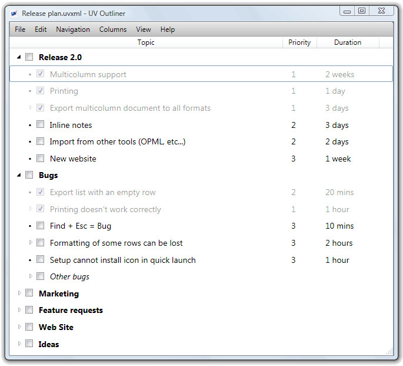
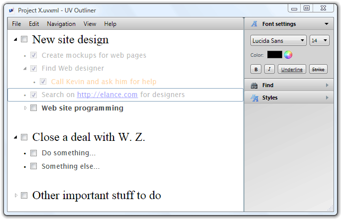
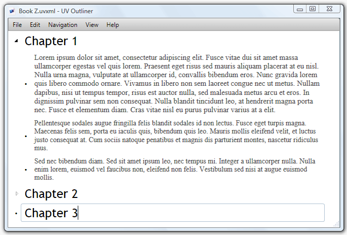
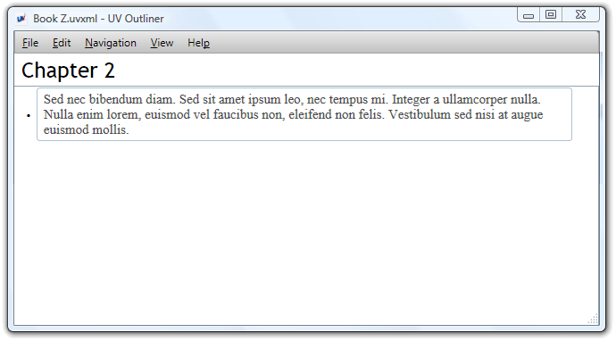

|
|
|
TourOutliner is a universal tool for working with hierarchical text information. Document in UV Outliner consists of rows. For example, when you work on a plan or schedule, each row may represent either category, action point, or task. Let's look on the following example:  Each row supports full rich text, which means that text formatting, colors and so on can be applied:  If you work on a book or article, your outliner document may look like this:  These are just two possible examples of outliner usage. In reality, outliner is suited to hold any hierarchical text information: collection of useful links, tasks, schedules, travel plans, meeting minutes and much more. HoistingWhen your outline becomes big enough, it is very convenient to work with just some part of the document.
This can be done by using Hoist feature from View menu. When applied, current row of a document becomes the root row, and only sub-rows can be edited.  ExportYou can easily export your outline to the following document types:
Export window allows you to copy exported document to a clipboard instantly, without saving it to a file.
Working in UV OutlinerOutliner was designed in such a way, that main operations are always available from keyboard. There are two modes in outliner:
In text editing mode outliner works just the same as a usual text processor. In this mode you enter or edit text. In row selection mode work is done with the whole row. For example, if you need to change font settings for entire row, you can switch to row selection mode and change font setting. To enter text editing mode you can press F2 or click mouse button on the text. To exit text editing mode and to enter row selection mode you can just press Esc. Navigation in UV OutlinerOne of the advantages of outliner comparing to text editor is that in outliner you can "play" with information. Arranging rows takes just few keyboard presses. Keyboard shortcuts:
|
|||||||||||||
|
Copyright © Ultraviolet Software
E-mail: fedir@uvoutliner.com |